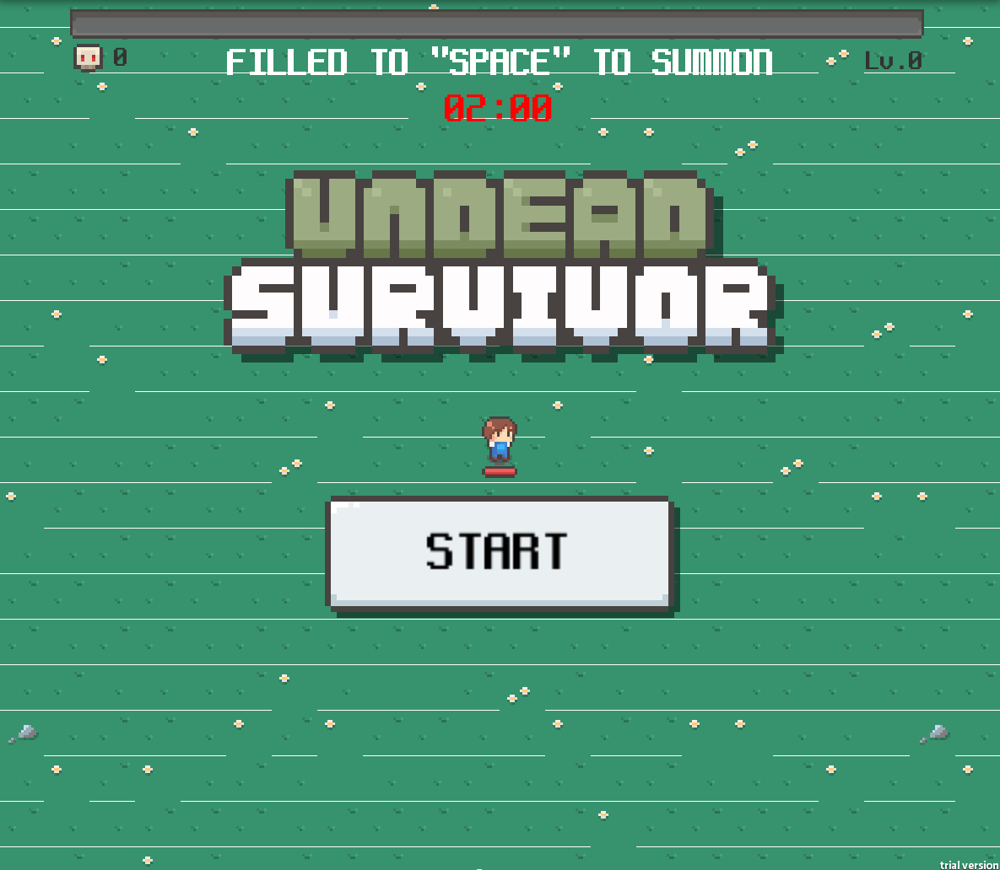

Summon
Ludum Dare 55 · Summoning

Project Overview
This is a Vampire Survivors-like survival combat game. I added a summoning system to the basic movement, combat, and upgrade loop: after leveling up, the player can summon a companion. Each companion increases the group's total firepower, but a larger group is also easier for enemies to hit.
Handle Enemy Groups
Level Up
Summon a Companion
Maintain Group Firepower
Core Design
Reward and Risk of Additional Summons
More companions produce more damage, but a larger group is also more likely to enter enemy attack ranges. Summoning is not only an upgrade reward; it also increases the risk the player must manage.
Positioning and Companion Losses
The player must keep moving to reduce companion losses and preserve already summoned teammates. Victory depends on maintaining a balance between growing firepower and group survival.
My Contributions
This was a solo entry. I independently completed the game design, summoning and upgrade logic, enemies and combat loop, interface feedback, and integration of the final playable build.